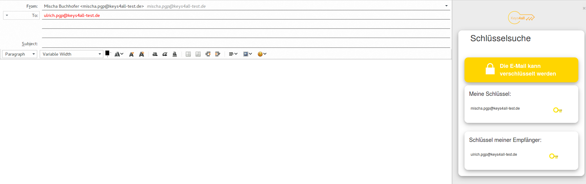

Keys4All-Addon
Keys4All-Addon for Thunderbird

Features
- DNSSEC verification of SRV-entries
- DANE verification of key-server and LDAP-server
- Auto-import keys from openpgp-keyserver
- Auto-import certificates from ldap
- Key/Certificate upload
Limitations
- Project Status: Working prototype
- Hard-coded values
- LDAP-URL
- LDAP-Search-Base
- Accepted domain for key/certificate upload
License
The Keys4All-Addon itself is licensed under ...//TODO: Lizenz?. 3rd-party dependencies and their licenses are listed in the next section.
3rd-party dependencies & licenses
- Twitter Bootstrap 3: MIT
- handlebars.js: MIT
- jquery.mustache: MIT
- jquery2: MIT
- mustache.js: MIT
- openpgp.js: LGPLv3
- subprocess.jsm: MPL/GPLv2/LGPL
- Js-sha256: MIT
- libUnbound: BSD-3-Clause
- ldns: BSD-3-Clause
- openssl: BSD-3-Clause-like
- ldap3: LGPLv3
Build
Change configuration
- Change search base for certificate search
- LDAP_SEARCH_BASE: in "/python_src/ldap.py"
- Change URL to Ox-Guard for PGP-Key-Upload
- const BASE_URL: in "/src/chrome/content/ui/js/vvv-key-upload.js"
- Change URL to LDAP-Server & accepted email-domain for account management
- if (identity.email.endsWith("keys4all-test.de")) in "/src/chrome/content/ui/js/vvv-account-manager.js"
Native binaries & dependencies
Dependencies:
- libUnbound
- libLdns
Building native binaries & dependencies:
cd ./native_src/SRVFetch/lib/build
cmake ..
make
cd ../../build
cmake ..
make
cd ../../WinGetEnv/build
cmake -DCMAKE_TOOLCHAIN_FILE=../Toolchain-cross-mingw32-linux.cmake ..
makePython programs & modules
Dependencies:
- ldap3
- Installation: pip install ldap3
- pyinstaller
- Installation: pip install pyinstaller
Build ldap_tool:
pyinstaller ldap_tool.py -F --hidden-import ldap3Build Thunderbird Addon:
- Execute 'ant' in terminal
- The built addon may be found in the "dist"-directory
Appendix
Internals(german)
Architektur
Thunderbird-Addon
Der Quelltext des Addons ist im 'src'-Verzeichnis abgelegt.
JavaScript-Module
Eine Sammlung an JavaScript-Modulen ist in der Datei src/chrome/content/ui/js/modules.js abgelegt. Die Dokumentation zu den Modulen kann über /docs/js-modules/index.html aufgerufen werden. Folgende weitere Module befinden sich außerhalb der modules.js:
- vvv-account-manager.js: Speichert zu welchen Accounts Schlüssel oder Zertifikate hochgeladen wurden.
- vvv-key-cache.js: Speichert das Ergebnis der Schlüsselsuche für eine Stunde und aktualisiert Sie wenn notwendig.
- vvv-key-lookup.js: Validiert Email-Adressen im Composer-fenster und sendet diese an das iFrame für die Schlüsselsuche weiter.
- vvv-key-lookup-iframe.js: Verwendet vvv-key-cache & modules.js für die Schlüsselsuche und Aktualisierung.
- vvv-key-upload.js: Enthält Funktionen für den Upload von PGP-Schlüsseln an den OXGuard
- vvv-overlay.js: wird durch main-window.xul eingebunden.
- vvv-templateloader.js: Enthält Funktionen zum Laden von Mustache-Templates(HTML-Templates).
Overlays/Anpassung der TB-Oberfläche
Unter src/chrome/content sind die XUL-Dateien zur Anpassung der Oberfläche abgelegt.
- main-window.xul: bindet den VVV-Button in die Toolbar ein
- Bei einem Klick auf den Button wird ein neuer Tab mit der VVV-Schlüsselverwaltung geöffnet.
- vvv-key-lookup.xul: bindet das iFrame für die Schlüsselsuche in das "Composer"-Fenster ein.
- Ein eingebundenes Skript sendet die eingegebenen Empfänger an den iFrame weiter.
- Im iFrame wird die eigentliche Schlüsselsuche angestoßen
Schlüsselsuche
Komponenten
Folgende Komponenten sind an der Schlüsselsuche beteiligt:
- vvv-key-cache
- ldap_tool
- SecureFetch
- modules.js
ldap_tool
Das ldap_tool fügt Zertifikate zu einem Nutzer auf einem LDAP-Server hinzu oder löscht diese. Die von ldap_tool gesendeten Anfragen überprüfen das Server-Zertifikat mit einem zuvor über SecureFetch geladenen Zertfikat. Das über SecureFetch geladene Zertifikat wird vor der lokalen Speicherung mittels DNSSEC & DANE überprüft.
Aufgaben:
- Hochladen von Zertifikaten auf einen LDAP-Server
- Löschen eines Zertifikats am LDAP-Server
- Verifizierung der TLS-Verbindung mit Hilfe eines lokalen, zuvor geprüften Zertifikats.
SecureFetch
SecureFetch dient zur Validierung von TLSA/DANE/DNSSEC Einträgen an einem DNS-Server. Zusätzlich kann es validierte HTTPS(HTTP 1 & 1.1) Anfragen senden und die Antworten auswerten.
Aufgaben:
- Abruf von DNSSEC-gesicherten DNS-Einträgen
- Validierung & Lokale Speicherung von Zertifikaten(DNSSEC/DANE)
- DANE-gesicherte HTTPS-Anfragen
VVV-Key-Cache
Der VVV-Key-Cache speichert für eine Stunde folgende Informationen zu einer Schlüsselsuche:
- Zeitstempel der Suche
- Empfänger-Email
- Schlüssel-Typ: VVV, Lokal, Kein Schlüssel
- Hash: SHA256-Hash des Schlüssels oder Zertifikats, falls gefunden.
Ablauf
- Prüfung ob Schlüssel/Zertifikat-Information im Cache ist und (zeitlich) gültig ist
- Falls ja:
- direkte Rückgabe der Information
- Ende
- sonst:
- weiter
- Falls ja:
- Suche nach VVV-PGP-Schlüsseln und VVV-Zertifikaten
- Falls gefunden:
- Import in GPG/Thunderbird
- Anlegen/Aktualisieren des Eintrags im Cache
- Ende
- sonst: weiter
- Falls gefunden:
- Suche nach lokalen Schlüsseln und Zertifikaten
- Falls gefunden:
- Anlegen/Aktualisieren des Eintrags im Cache
- Ende
- Falls gefunden:
- Anlegen eines Eintrags im Cache: Kein Schlüssel oder Zertifikat
Build native dependencies with msys2 for Windows
Setup Development Environment
Follow the following guide to install msys2, gcc & make:
https://github.com/orlp/dev-on-windows/wiki/Installing-GCC--&-MSYS2
Install dependencies with pacman
Openssl-devel 1.0.2k
Be sure to install the 1.0.x version of openssl!
pacman -S openssl-devellibexpat
pacman -S libexpat-develflex
Be sure to install a version lower or higher than 2.6.3 because of a bug in that version!
wget http://repo.msys2.org/msys/x86_64/flex-2.6.1-1-x86_64.pkg.tar.xz
pacman -U flex-2.6.1-1-x86_64.pkg.tar.xzBuild Libraries
Important Build Notes
Downloading PKGBUILD files
To get the PKGBUILD files you need you can download or clone the following repository:
https://github.com/Alexpux/MINGW-packages
After the download you should copy the directories for the needed packages to your msys home directory "home/your_username".
Fix PKGBUILD files
Most PKGBUILD files in the msys2 repository are out-of-date. Because of that you need fix the SHA256-sums inside these files using openssl and a text-editor:
openssl dgst -sha256 ./the_file_to_hashBuild & install LDNS
Copy the mingw-w64-ldns directory to your home directory and enter it. After that Compile and install it with the following commands:
MINGW_INSTALLS=mingw64 makepkg-mingw -sLf
pacman -U mingw-w64-x86_64-ldns-1.6.17-4-any.pkg.tar.xz
cd ..Build and install LibUnbound
Copy the mingw-w64-unbound directory to your home directory and enter it. After that Compile and install it with the following commands:
cd mingw-w64-unbound/
MINGW_INSTALLS=mingw64 makepkg-mingw -sLf
pacman -U mingw-w64-x86_64-unbound-1.5.10-1-any.pkg.tar.xzUsing the libraries in your own projects
Add the following headers to use the libraries:
#include <stdio.h> /* for printf */
#include <ws2tcpip.h>
#include <unbound.h> /* unbound API - BSD-LICENSE*/
#include <stdbool.h> /* bool */
#include <ldns/ldns.h> /* BSD-LICENSE*/
#include <ldns/rdata.h>
#include <math.h>
#include <string.h>Compiling own sources:
mkdir build
cd ./build
cmake -G "MSYS Makefiles" ..
make